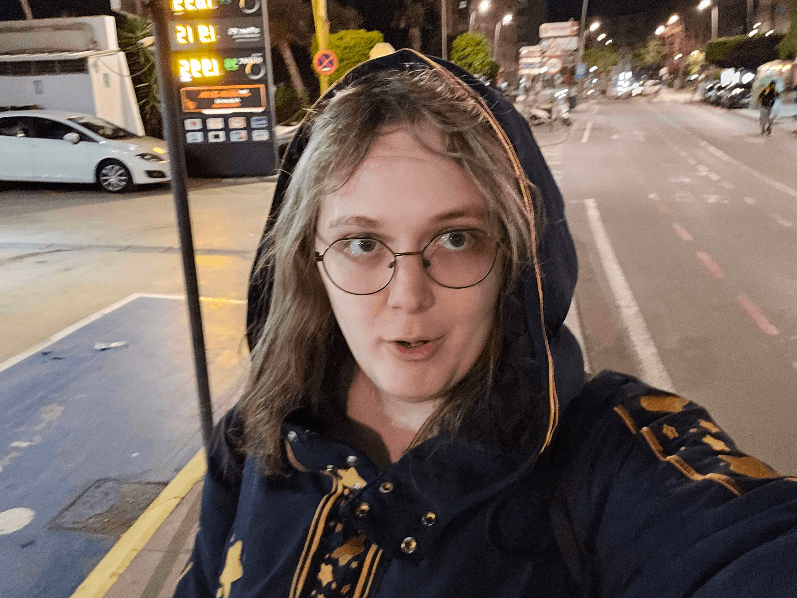
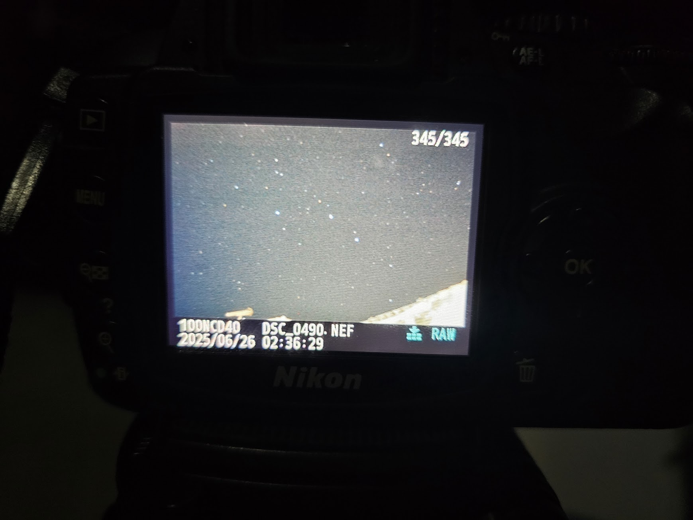
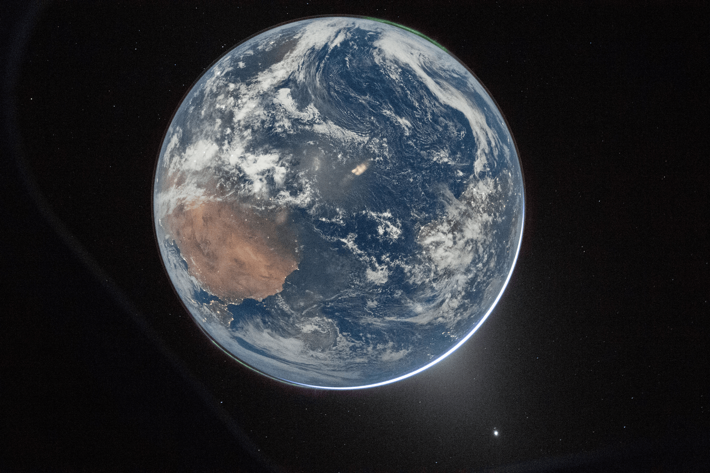

Responde al nombre de Pau. Si le llaman Paula se pone agresiva. Muy mimosa y a veces calculadora.
Antaño fue una habitual de Lemniscata. ¡Incluso tiene su propio espacio aquí dentro! Puedes hacer click aquí para verlo y conocerla más en detalle. Quizás te sea de ayuda si pretendes encontrarla.
Ha cometido multitud de crímenes graves, entre los que se incluyen trasnochar en exceso, curiosear sin límite alguno y expresarse artísticamente de formas raras. Se sospecha que puede encontrarse en el este de la península ibérica haciendo fotos chulas, programando la enésima tontería de su vida o jugando jueguitos. Según la época del año, también podría encontrarse viajando, manteniendo relación con otros criminales de lo más variopintos.
Adjúntese cualquier información mediante la pestaña Contacto y se recompensará con una cuantiosa suma. Suma de mimos, por supuesto. Aquí no ganamos para pagar con dinero. Ya quisiera yo que...
En los páramos de Lemniscata descansan entidades de lo más variopintas. Muchas ayudan a crecer este oasis espacial dejándonos creaciones artísticas de sus propios mundos.
Desde la dirección hemos decidido poner a disposición del público una cantidad razonable de ellos a través de una exposición que podrás disfrutar siempre que pases por aquí. No podemos decir que entendamos todos ellos, seguro que algunos tienen hasta secretos muy secretosos que solo quienes sean afines al concepto pueden comprender, pero desde Lemniscata creemos firmemente que la gracia de la expresión artística puede ser a veces ininteligible para ciertos públicos.
Si quieres contribuir a la exposición, puedes crear tu juguete y enviarlo mediante los métodos de la pestaña de contacto. Y si no, entra a cualquiera desde el menú de la derecha y echa un vistazo. Nunca se sabe qué te encontrarás.

¿Te gustan las fotos? Tenemos unas miniexposiciones en el museo. Puedes pasarte a echar un ojo cuando quieras.
Hay una buena variedad de fotitos guays que puedes ver. Casi todas están hechas por Paula (sí, la que se busca. Es, es una larga historia), pero nos consta la presencia de algunas contribuciones especiales de sus amiwis.
Algunas exposiciones tienen más sentido que otras. En realidad, todos los parámetros varían entre ellas (estética, temática, maravillosidad...), pero vamos que es lo típico que hay que ver una vez en la vida antes de morirse.
Haz click aquí para visitar el museo, o entra desde la barra de navegación. ¡La entrada es gratuita!
Visitante de Lemniscata:
Este es un lugar seguro en el universo. Lo es para ti, para mí, y para cualquiera que quiera pasarse un ratito por aquí. Que lo sea implica que si no comulgas con las bases morales que aquí compartimos deberías abandonar este sitio para siempre.
No exigimos nada que no sea una obviedad, pero recuerda que aquí no tienen cabida actitudes tránsfobas, xenófobas, o que impliquen cualquier tipo de odio. Aunque sí, la equidistancia es mala, así que la excepción es odiar nazis. Patea a tu nazi local.
Por elección popular, el planeta destacado de este siglo es Tierra, un mundo rocoso perteneciente al Sistema Solar, ubicado en uno de los brazos de la galaxia Vía Láctea (en el centro del Cúmulo de Virgo).
La Tierra se encuentra en la zona ideal respecto a su estrella para que se haya podido desarrollar la vida basada en el carbono. Está mayormente cubierta de agua líquida en su superficie, aunque la presencia de actividad geológica intensa ha creado grandes zonas de roca. Parece que la vida predominante se reparte en dos especies, dependiendo del entorno: en el mar, el plancton, un bichito muy mono y que parece malvado; en la roca, la hormiga, otro bichejo muy colaborativo.

El planeta, además, cuenta con un satélite rocoso. Probablemente surgió de una colisión con otro protoplaneta mientras el sistema nacía. Una curiosidad sobre este satélite es que ha desarrollado acoplamiento de marea con la Tierra, y debido a ello siempre le da la misma cara al planeta.
Según el registro oficial la vida en la Tierra está aislada de su entorno, pero aquellos que nos visitan aquí, en Lemniscata, tras viajar cerca de la Tierra, relatan avistamientos de objetos cuya trayectoría coincide con objetos lanzados desde allí. Varios grupos de investigación han mostrado su interés en investigar si allí hay algo más. Algunos estudios preliminares sugieren evidencia de una tercera especie dominante en el planeta, pero aún no es lo bastante concluyente como para ser aceptada.
Y esto es todo, nos vemos el siglo que viene con otro planeta. Recuerda que un lustro antes de la siguiente elección podrás votar visitando Lemniscata durante tus viajes.